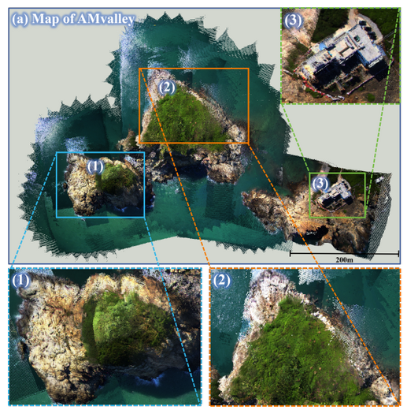
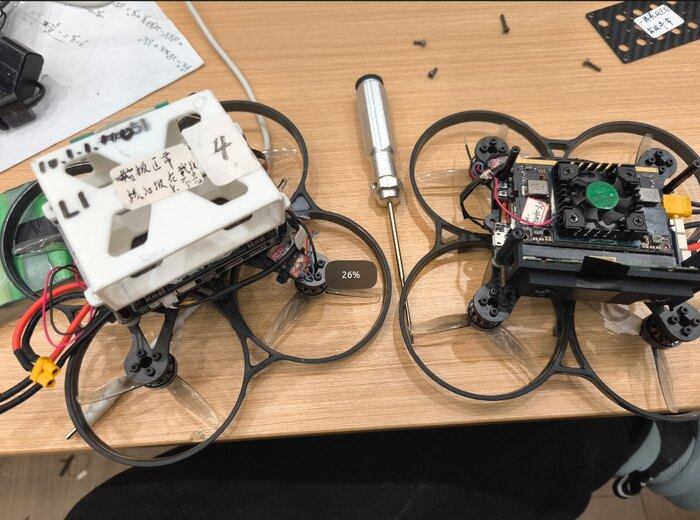

LiDAR-VGGT: Cross-Modal Coarse-to-Fine Fusion for Globally Consistent and Metric-Scale Dense Mapping
Lijie Wang, Lianjie Guo, Ziyi Xu, Qianhao Wang, Fei Gao, Xieyuanli Chen.
IEEE Robotics and Automation Letters (RAL), 2026.

I am currently a second-year M.S. student at FAST-Lab, Zhejiang University, advised by Prof. Fei Gao. Before that, I received my B.Eng. degree from the School of Automation, Northwestern Polytechnical University.
I enjoy Robotics and 3D Vision, and I am now spending most of my time on Generative AI. Previously, I worked on robot navigation and built simulation environments for navigation research.
Along the way, I enjoy building open-source infrastructure tools and growing into a full-stack engineer who can turn ambitious ideas into cool, reliable, and useful systems.


Email: lianjie.guo555@gmail.com

Lijie Wang, Lianjie Guo, Ziyi Xu, Qianhao Wang, Fei Gao, Xieyuanli Chen.
IEEE Robotics and Automation Letters (RAL), 2026.

Lianjie Guo*, Zaitian Gongye*, Ziyi Xu, Yingjian Wang, Xin Zhou, Jinni Zhou, Fei Gao.
IEEE/RSJ International Conference on Intelligent Robots and Systems (IROS), 2024.

FriendlySplat is a user-friendly and clean Gaussian Splatting codebase, integrating SOTA features into a unified platform for training, pruning, meshing and segmentation. It is currently under construction.

This is an unofficial implementation of PackForcing, built as a personal study project to better understand PackForcing and the broader "Forcing" family of long-video generation methods. Built for fun and study.

Research Intern · Hangzhou
2025.5 - 2026.5
Worked on robot navigation simulation and video model for navigation.
M.S. Researcher · Huzhou
2023.7 - 2025.3
Worked on multi-UAV relative localization and UAV hardware systems.


